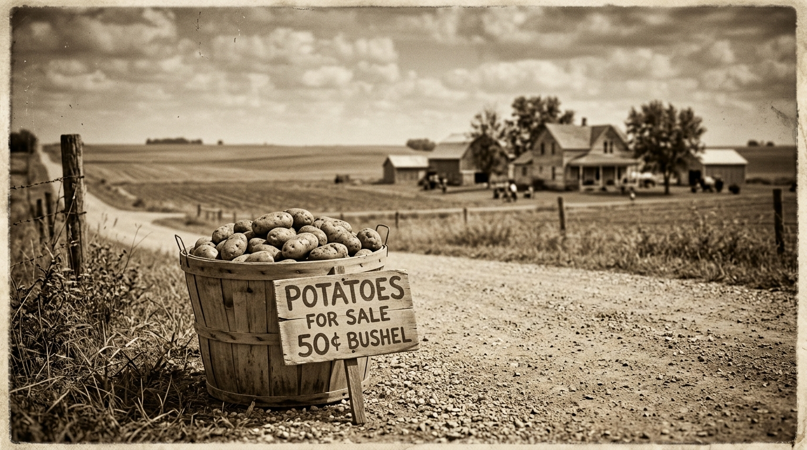
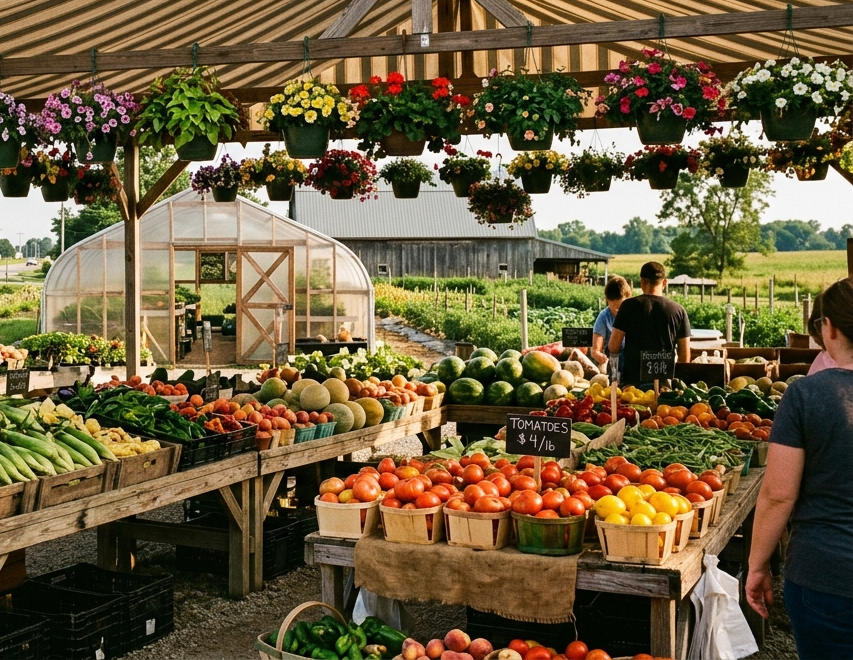

Every family business starts with one brave little idea. Ours fit in a bushel basket.
1937 to today
Joella Decker sets a bushel basket of potatoes at the edge of the road in Huntertown with a hand-painted for-sale sign — "just to see if she could generate some sales." It sells. She and her husband Charles keep going.
The roadside stand grows into a four-acre truck farm known across the region — "the original farmer's market" of the area. Joella tends it until her passing in 1977; Charles carries on.
Son Tom Decker and his wife Sharon take the reins and move the market a few miles up the road to LaOtto — keeping the Huntertown name and the family way of doing things. Their reach grows across northeast Indiana, southern Michigan and western Ohio.
The market is run by Sharon Decker and her three daughters — Theresa, Rose and Elizabeth — the fifth generation of women to work it. Along the way the family has weathered two fires, a tornado and a pandemic, and never missed a season.

More than a market
Opening day each spring is practically a holiday — regulars stop in just to say, "I'm so glad you're open." Some of our produce growers have supplied the family for more than forty-five years. And the giving goes further than the county line: for years the family has partnered with a village in Ukraine, sending clothes and unused seeds.